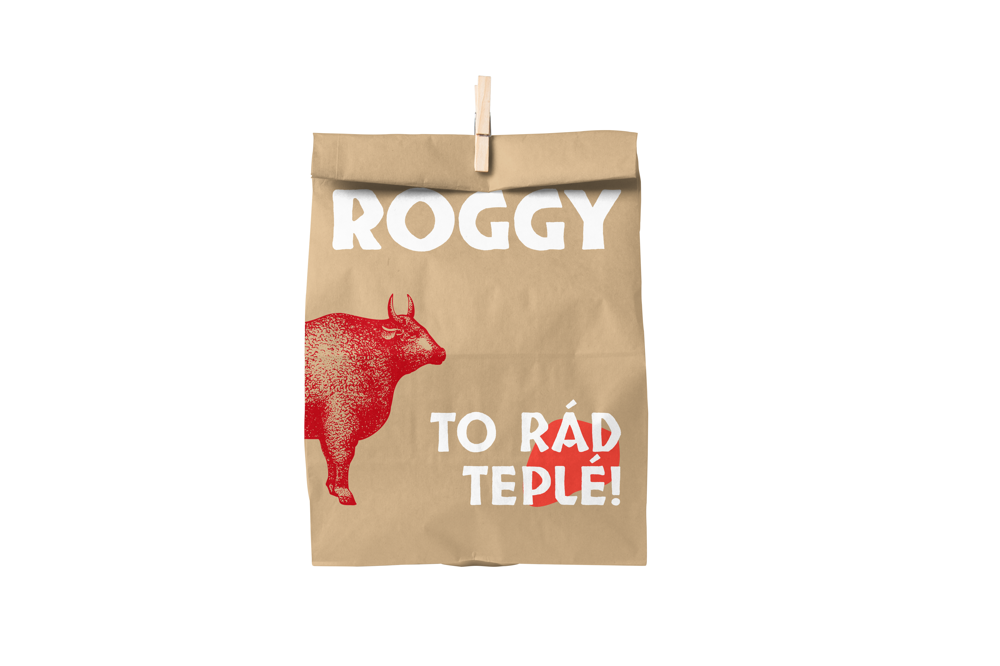
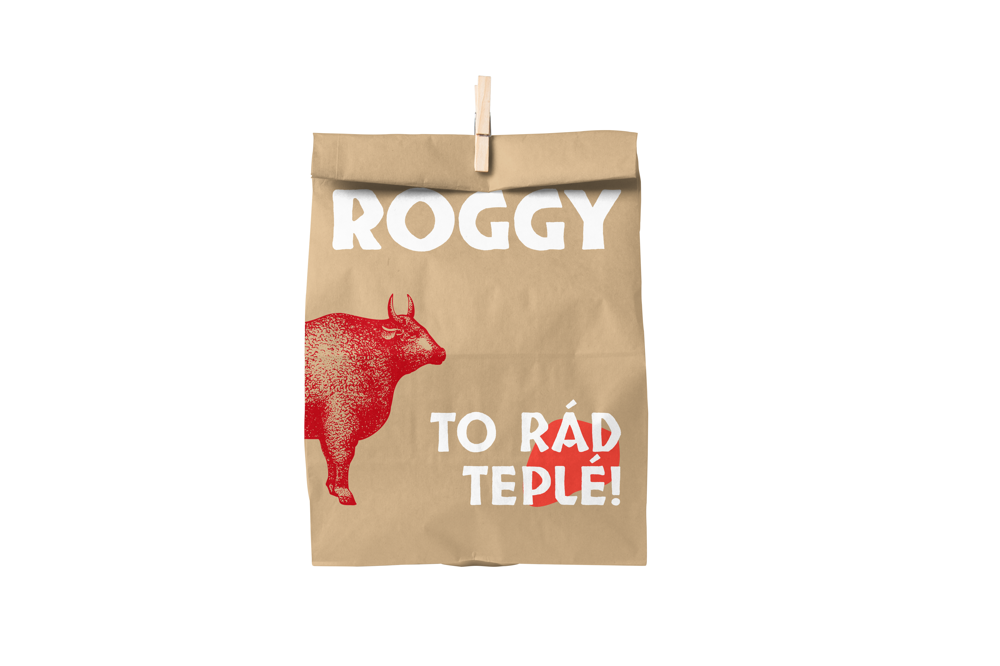

Roggy

 

Roggy, miłośnik solidnych kawałków mięsa, przeprowadził się z USA do Brna za miłością i postanowił otworzyć tu swój foodtruck na owocowym rynku. Specjalizuje się w wołowych stekach, burgerach i solidnych XXL porcjach w prawdziwym amerykańskim stylu. Jego wizualna identyfikacja jest rustykalna, łączy drewno i metal, a wokół foodtrucka znajdują się drewniane, kwadratowe stoły oraz stojaki na schłodzone piwo. Koncept Roggy’ego jest prosty, uczciwy i pełen smaku – autentyczne amerykańskie BBQ dla wszystkich miłośników dobrego mięsa i luźnej atmosfery.